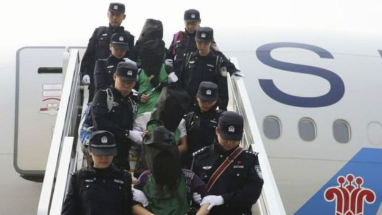

印尼将引渡逾百名中国籍网络诈骗疑犯
文章来源:http://www.bbc.com/zhongwen/simp/world-40798956
发稿日期:2017/8/2
目前未确认被引渡疑犯当中是否有台湾人 (AFP)
印度尼西亚将引渡153人，其中大部分为中国公民，他们被指控以中国境内人士为目标，网络诈骗达数百万美元。
警方指，这些团伙将运作地定在中国境外，是为了逃避北京当局的侦查。
目前未有明确消息确认，被引渡疑犯当中是否有台湾人。
这群人被指控伪装成中国司法人员联络受害人，要求支付金钱换取法律援助，以这种方式骗取了超过4.5亿美元。
中国政府已声言要制止电话诈骗犯罪，当局官员指此类犯罪已经导致多名受害人自杀。
境外运作
法新社引用印尼警方的话指，这一犯罪团伙从2016年底开始运作，但没有以印尼境内人士为目标。
收到中国当局举报后，印尼警方拘捕了有关人员，警方发言人里旺托（Rikwanto）表示：“我们正在展开紧张的调查，目前正与中国警方协调引渡事宜。”
该团伙分布在印尼的多个地点，成员包括电脑专家，负责收集受害人信息以及开发通讯系统以联络到他们。

去年，肯尼亚、马来西亚、亚美尼亚和柬埔寨将涉嫌跨国界电信诈骗的嫌犯送到中国大陆，其中包括一些台湾公民。 (XINHUA)
法新社指，当中的中国公民于周末期间在雅加达、泗水和巴厘岛等地被捕。
雅加达警方发言人尤渥诺（Argo Yuwono）指，行骗者和受害人都是中国人，只不过诈骗团伙是在印尼运作。
其中有部分中国籍人员据称是没有有效证件进入印尼境内，警方正在进行进一步调查。
近年，针对中国境内人士的网络犯罪越来越多地在中国境外运作，主要是东南亚地区，而北京当局则越发强调要求将嫌疑人引渡至中国。
去年，马来西亚将67名诈骗案疑犯引渡至中国大陆，其中有45名台湾人，虽然台湾多番抗议和派人员前往进行协查和磋商，但北京仍然坚持，疑犯将按照中国大陆法律惩处。